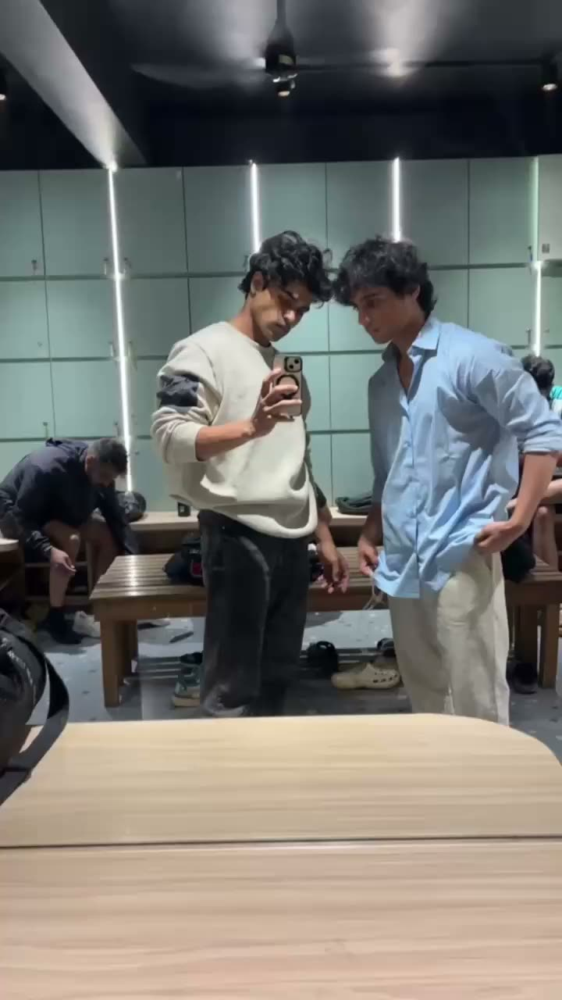

Sahil & Shivam
Social Media, Content & Web
Handling socials, growing audiences, building websites and stepping in front of the camera.

We run your socials
Turning scrolls into followers
Shooting content that stops the thumb
Building websites that feel like you
In front of the lens, too
What we do
Social Media Handling
We run your accounts end to end: content calendar, posting, community replies, and a monthly report on what's working.
Instagram · YouTube · LinkedInContent Creation
Reels, product shoots and edits with strong hooks, clean captions and sound that fits.
Shoot · Edit · PostGrowth Strategy
We study what your audience actually stops for, then build a posting plan around it.
Audit · Plan · RepeatCustom Websites
Fast, custom sites that match your brand and turn profile visits into enquiries.
Landing pages · Portfolios · ShopsModelling
Brand campaigns, lookbooks and editorials when your content needs a face.
Campaigns · Lookbooks · Editorial
Selected Work
Reels we've planned, shot and edited for brands. Tap one to watch with sound.
Patient Story
Dental clinic · TestimonialManual vs Electric Toothbrush
House of Tooth · ExplainerBraces vs Aligners
House of Tooth · ExplainerProduct Review
Personal care · ReviewHaircare Product Ad
Haircare · ProductTote Bag Launch
Lifestyle · ProductFounder Intro
Events & decor · Brand storyComedy Skit
Events & decor · SkitIn front of the lens
Campaigns, lookbooks and editorials. When a brand needs a face, we step in.


Sahil & Shivam
Freelance · Social, content, web
We're a two-person team handling social media for brands end to end: planning, shooting, editing, posting and reporting.
When a brand needs a proper home online, we build the website too. When a campaign needs a face, we step in front of the camera.